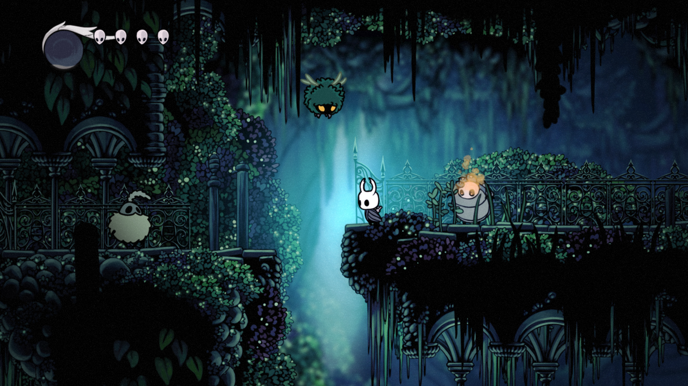

Introduction: In the dark and mysterious realm of video games, few titles manage to capture the essence of exploration, challenge, and atmosphere quite like Hollow Knight. Developed by Team Cherry, this indie gem has taken the gaming world by storm, offering an experience that is as enchanting as it is challenging.
Graphics and Art Direction: Hollow Knight boasts a hand-drawn art style that oozes with intricate details and a melancholic charm. The underground kingdom of Hallownest comes alive with its diverse cast of characters, each uniquely designed to fit within the game's eerie atmosphere. From the towering ancient structures to the smallest critters scurrying through the shadows, the game's art direction paints a world that's both haunting and beautiful.
Gameplay and Mechanics: At the heart of Hollow Knight lies its tight and satisfying gameplay mechanics. The protagonist, a silent knight, embarks on a journey through a sprawling interconnected world. The controls are precise, and the combat is skill-based, demanding players to learn enemy patterns and execute well-timed attacks and dodges. The real joy comes from mastering these mechanics, turning battles into a graceful dance of blades and reflexes.
Metroidvania elements are seamlessly woven into the gameplay. As players progress, they acquire new abilities that grant access to previously unreachable areas. This backtracking is rewarding, as it not only uncovers hidden secrets but also serves as a testament to the game's clever level design.
World Design and Atmosphere: Hollow Knight's world is a labyrinth of interconnected chambers, filled with secrets, challenges, and a hauntingly beautiful atmosphere. The audio design, consisting of subtle environmental sounds and a mesmerizing soundtrack, contributes to the overall sense of immersion. The diverse regions of Hallownest each have their own unique ambience, adding layers of intrigue to the exploration.
Story and Lore: The game's narrative is ingeniously told through environmental storytelling, cryptic NPCs, and glimpses of a forgotten history. Players gradually uncover the tragic past of Hallownest, adding emotional weight to their journey. The ambiguity and depth of the lore have inspired a dedicated community of fans who eagerly discuss and theorize about the game's mysteries.
Difficulty and Progression: Hollow Knight is not for the faint of heart. Its difficulty curve is steep, challenging players to persevere in the face of relentless foes and intricate platforming sections. However, this challenge is part of what makes the game so rewarding. With every boss defeated and obstacle overcome, a sense of accomplishment washes over the player.
Conclusion: Hollow Knight stands as a testament to the power of indie game development. Its captivating art style, masterfully crafted gameplay mechanics, and engrossing atmosphere create an experience that lingers long after the credits roll. The dedication of Team Cherry shines through every aspect of the game, resulting in a masterpiece that has rightfully earned its place among the best in the genre. If you're ready to embark on an unforgettable journey through darkness and discovery, Hollow Knight beckons you to dive in.
Comment Section
User1: This game is amazing!
User2: I'm loving the atmosphere.
User3: Challenging but rewarding gameplay.